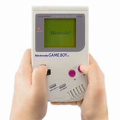

From Playing Cards to Pixels
Founded in 1889 as a playing card company, Nintendo evolved into one of the most influential video game companies in the world. Our philosophy of creating unique entertainment experiences has remained constant throughout our history.
The Game Boy, developed by Gunpei Yokoi and his team at Nintendo R&D1, was launched in 1989 and revolutionized portable gaming with its innovative design and extensive game library.
